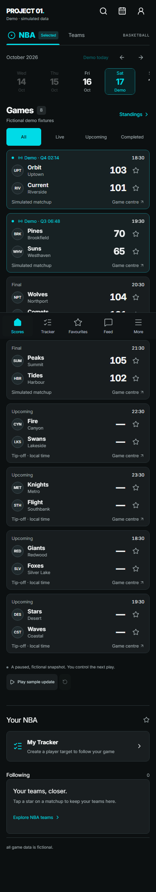
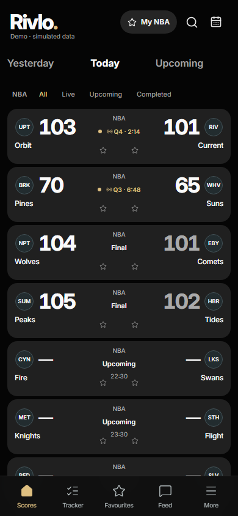
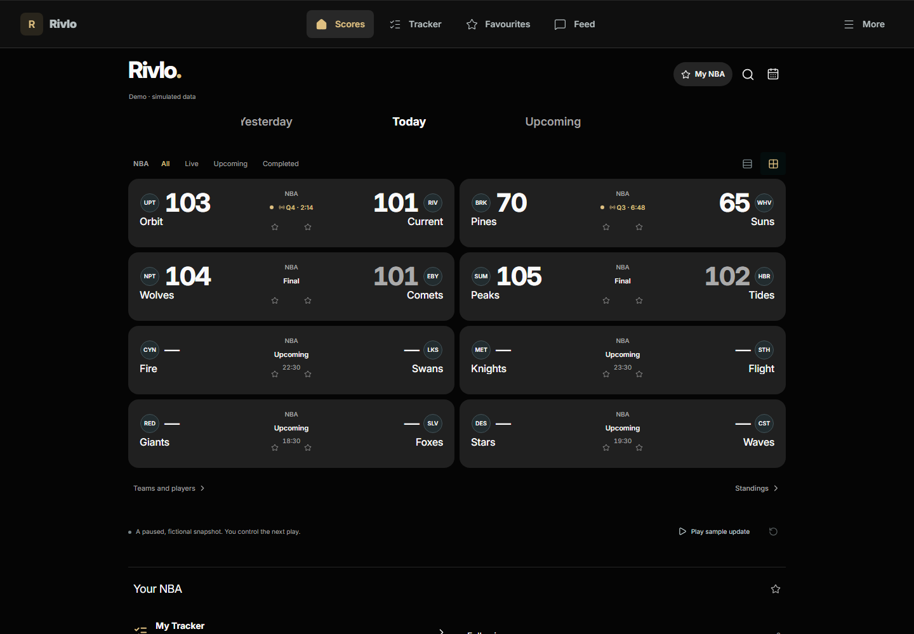

390px mobile viewport. Same fictional demo schedule in both captures; no sample statistics are represented as ESPN data.


| Reference structure | Rivlo implementation |
|---|---|
| Compact masthead and Yesterday / Today / Upcoming navigation | Rivlo masthead, three-day navigation, functional search and calendar; source disclosure retained. |
| Logos at opposing edges, prominent scores beside logos, centred NBA and status | Same matchup hierarchy and alignment. Existing independent team, game and favourite interactions remain available. |
| Tightly stacked charcoal matchup surfaces on black | 90px mobile rows with 5px gaps, 12px edge gutters and no gold card borders. Gold marks active states and followed teams. |
| Quiet typography and muted losing score | 34px tabular scores, smaller team names and metadata, verified final losing score muted. |
| Reference does not expose Rivlo's extra controls | Status filters and persistent navigation remain visible. Two discreet stars per matchup preserve team following. These intentionally add some density. |
| Green masthead tint and Apple branding | Near-black background and original Rivlo branding. No Apple logos, device status bar, gradients or betting features copied. |
The first implementation placed the first matchup at y=275. The refined mobile layout brings it to about y=178 and reduces each matchup from 106px to 90px, without removing search, date navigation, status filters or following. The previous homepage's first matchup started near y=344.
Two-column schedule with list/grid choice. Personal content follows the schedule rather than competing with it in a sidebar.
